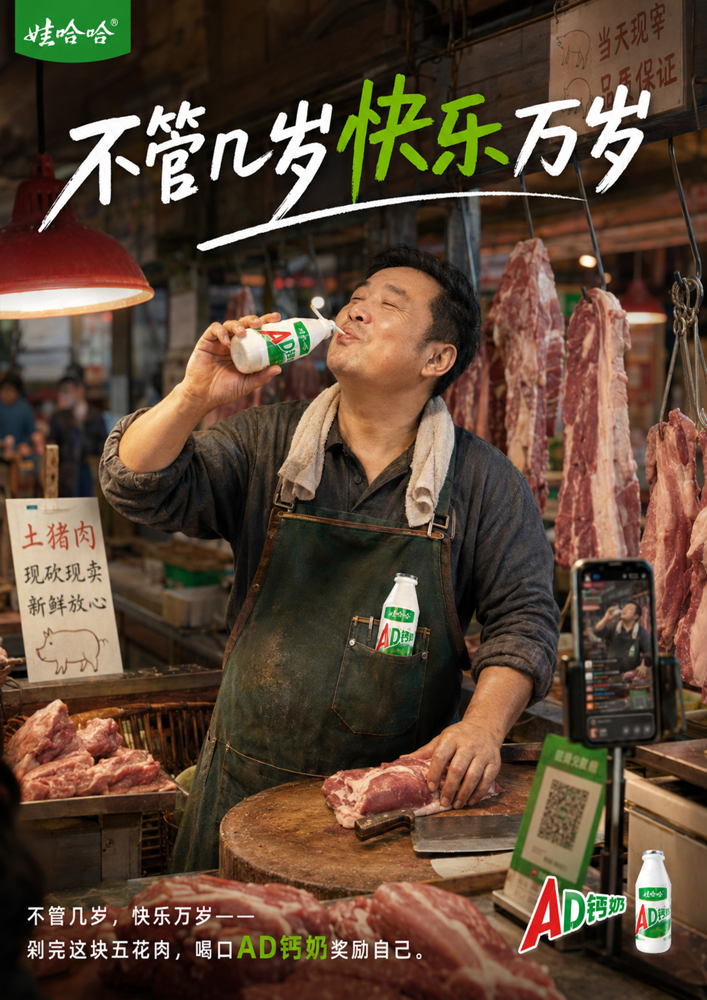

← 返回作品列表
03 / CREATIVE CAMPAIGN
娃哈哈品牌周年系列海报
创意概念 · 内容营销 · 视觉设计
01 / BRIEF
娃哈哈品牌周年节点，希望通过一组年轻化视觉海报，唤醒大众童年记忆，同时传递品牌「陪伴成长」的情感内核，触达Z世代年轻消费者。
02 / CREATIVE IDEA
以「不管几岁，快乐万岁」为创意主题，提取娃哈哈经典产品元素与童心青年生活符号，用复古撞色加现代扁平化手法重新演绎，打造既有怀旧感又符合当下审美的视觉表达。
03 / OUTPUT
系列主题海报 3 张，配套社交媒体传播图文，适配小红书、微博等多平台发布。
